Na prenájom 2 izbový byt s loggiou po kompletnej rekonštrukcii vo Zvolene.
Zvolen
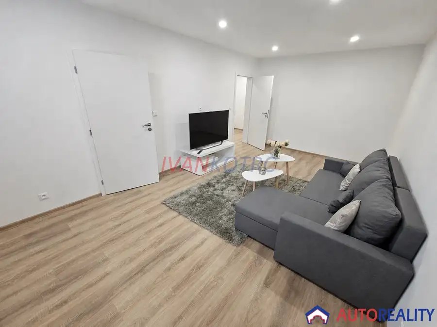
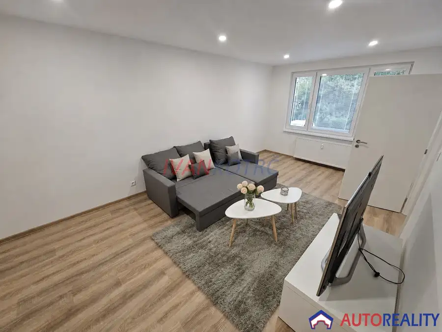
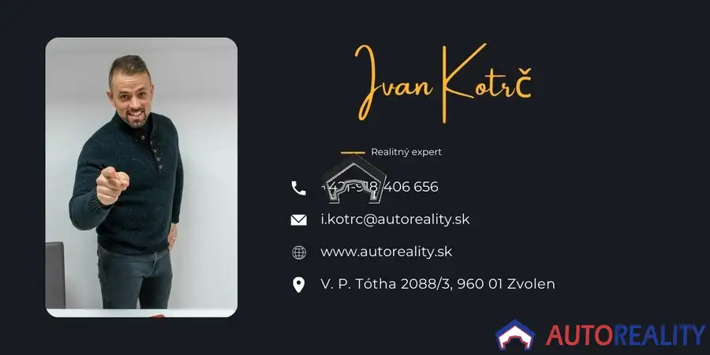
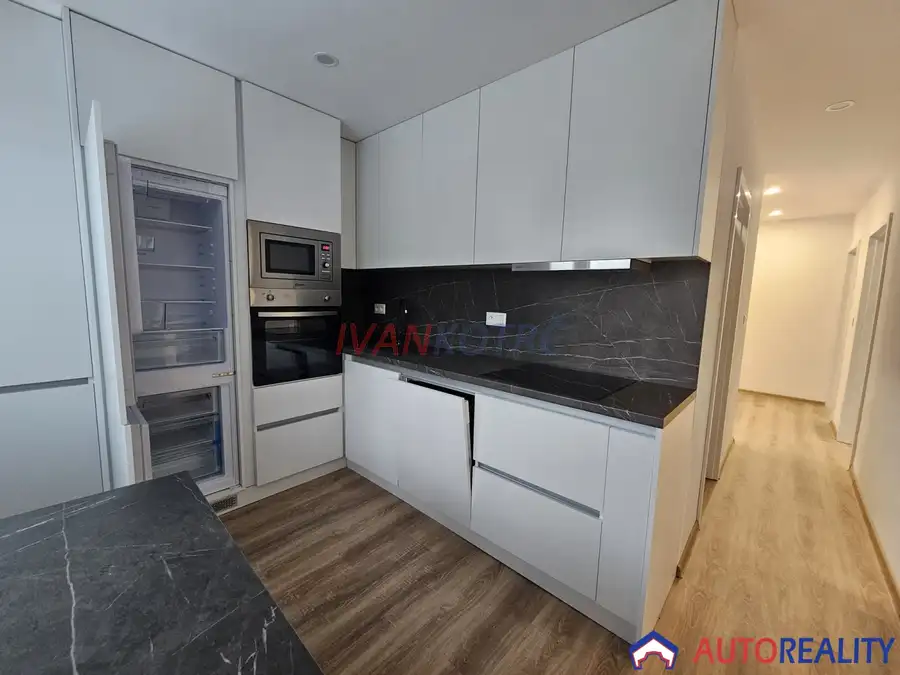
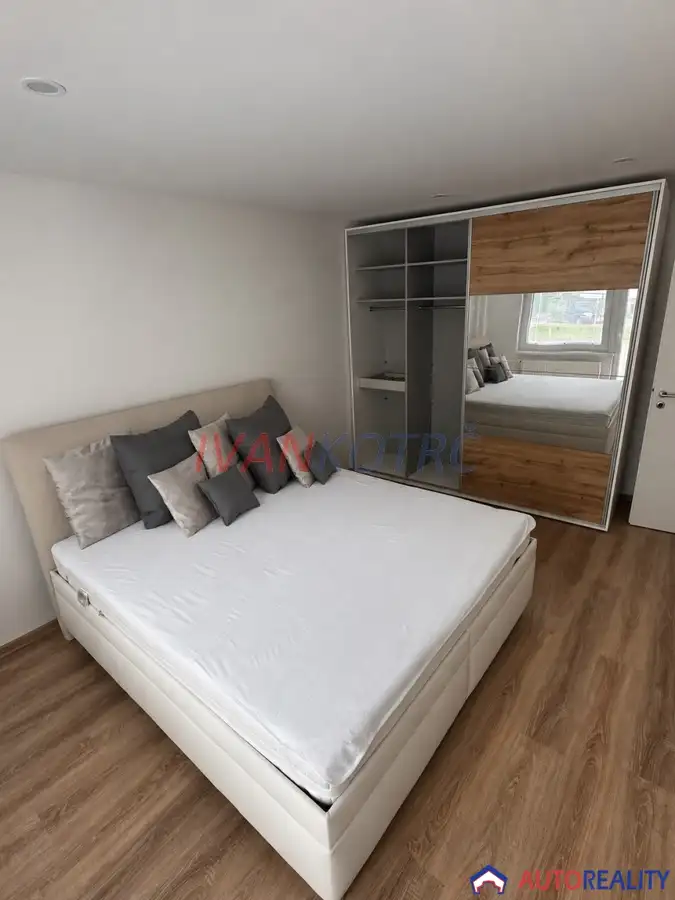
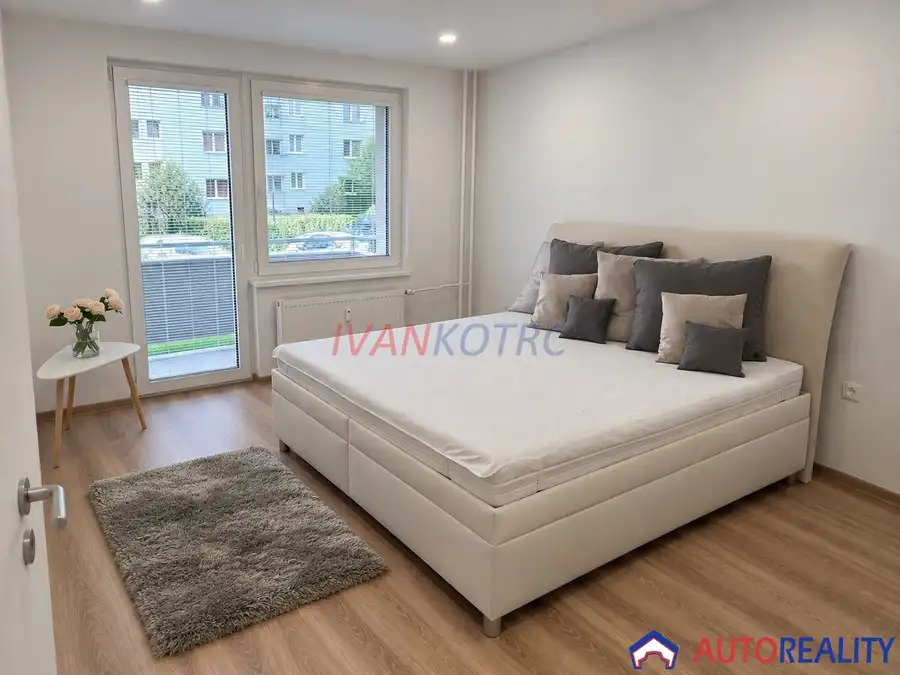
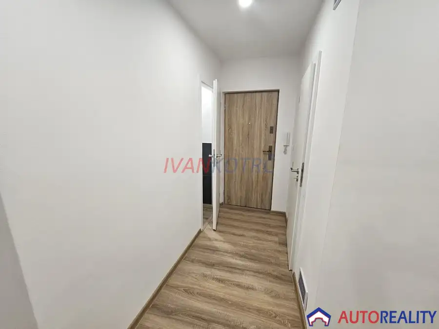
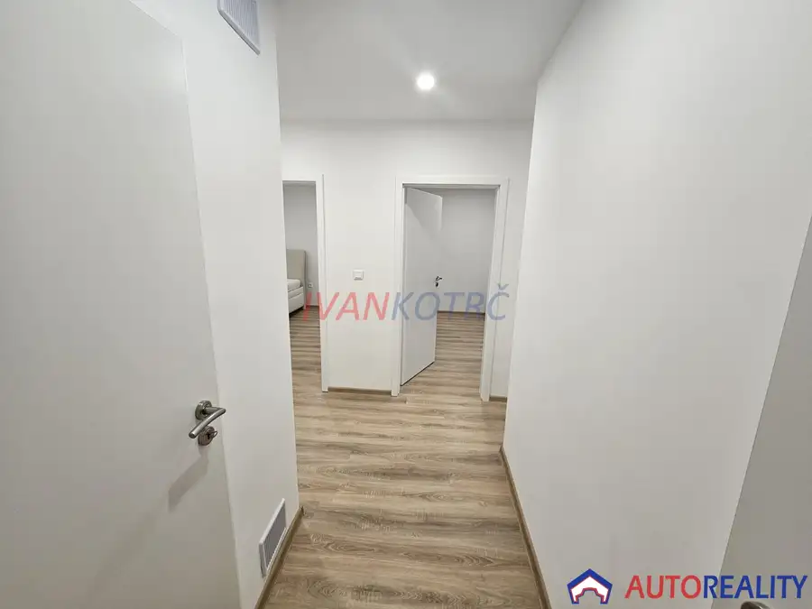
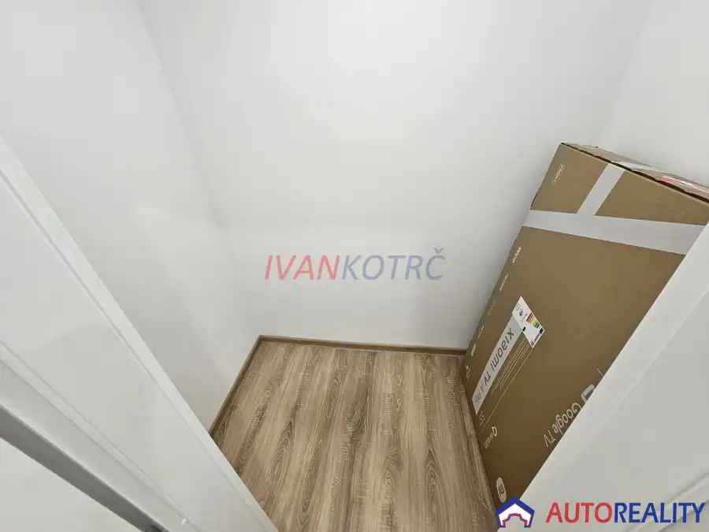
- Dispozícia2-izbový
- Plocha65 m²
- Poschodie1. z 1
- StavNovostavba
- VlastníctvoOsobné
O nehnuteľnosti
Spoločnosť AUTOREALITY v exkluzívnom zastúpení Ivana Kotrča (i.kotrc@autoreality.sk, alebo 0918 40 66 56) Vám ponúka na prenájom 2-izbový byt s loggiou vo Zvolene na ulici Generála Asmolova 86, ktorý vás ohúri hneď pri prvom vstupe. Byt s výmerou 65,45 m² sa nachádza na vyvýšenom prízemí, čo znamená príjemnú klímu počas celého roka a ľahký prístup bez zdĺhavého chodenia po schodoch či čakania na výťah. Dispozícia bytu je riešená prakticky a moderne: všetky izby sú samostatné a nepriechodné, čo zabezpečí súkromie pre každého člena domácnosti. Navyše, priamo v chodbe vás čaká veľkorysý šatník, ktorý ocení každý, kto nechce bojovať s nedostatkom úložného priestoru. Loggia poskytuje miesto na oddych, rannú kávu alebo večerný relax. Byt je ihneď obývateľný tak, ako vidíte na fotografiách, a v prípade dohody vám ho majiteľ vie aj zariadiť podľa vzájomnej dohody. V byte sa už nachádza aj veľká šatníková skriňa a aj komoda.Prečo práve táto lokalita?Ulica Generála Asmolova patrí medzi tichšie časti Zvolena, no zároveň vám ponúka všetko, čo potrebujete na pár krokov:Potraviny Coop, alebo Tesco hneď za rohom, takže čerstvé rožky či zabudnutý nákup nebude problém.Športo-rekreačné vyžitie nájdete v blízkom fitku či na neďalekom Orlíku a Ecome. Tak isto táto lokalita je rajom pre fanúšikov bicyklov.Skvelá dostupnosť vďaka blízkosti hlavných ťahov je dopravné napojenie výborné – ideálne pre každodenné dochádzanie alebo víkendové výlety. Do mesta sa ľahko dostanete MHD, ktorá je len pár krokov od bytu.Sekier-Môťová, je jediná mestská časť Zvolena kombinujúca pokojné bývanie so slušnou občianskou vybavenosťou – bez ruchu centra, ale stále blízko všetkého potrebného.CENA A PODMIENKY PRENÁJMUMesačné nájomné: 700 €Cena zahŕňa: * nájomné * energiePri podpise zmluvy sa platí:Aktuálne nájomné za daný mesiac: 700 € (alebo alikvotná časť)Dvojmesačné nájomné vopred 1400 €Vratná zábezpeka (depozit): 700 €Administratívny poplatok: 350 €Byt je ideálny pre jednotlivcov, páry alebo rodiny, ktoré chcú bývať v modernom a komfortnom priestore bez kompromisov.Ak hľadáte bývanie, ktoré vonia novotou, poskytuje súkromie a zároveň výhody kľudnej, no perfektne vybavenej lokality, ozvite sa čo najskôr. Takéto ponuky sa na trhu dlho neohrievajú!!!! POZOR !!! POSKYTUJEME ODMENU 200 € ZA KAŽDÝ TIP NA KÚPU ČI PREDAJ NEHNUTEĽNOSTI KDEKOĽVEK NA ÚZEMÍ SLOVENSKEJ REPUBLIKY !!!
Parametre
- Cena vrátane energií
- Nie
- Druh
- 2 izbový byt
- Dátum zverejnenia
- 22. 09. 2026
- Podlažie
- 1
- Počet izieb / miestností
- 3
- Počet lodžií
- 1
- Počet nadzemných podlaží
- 1
- Počet pivníc
- 1
- Stav nehnuteľnosti
- Novostavba
- Typ
- Prenájom
- Vlastníctvo
- Osobné
- Vybavenie
- Pivnica, Výťah, Lodžia
- Vykurovanie
- Ústredné
- Úžitková plocha
- 65 m²
Kde to je


Mohlo by Vás zaujímať
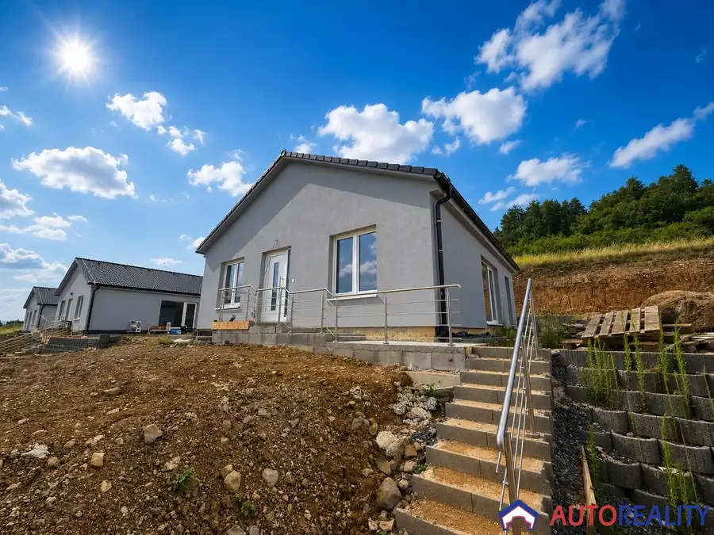
DomNové 284 900 €Moderná novostavba rodinného domu v Zvolenskej Slatine Zvolenská Slatina 92 m²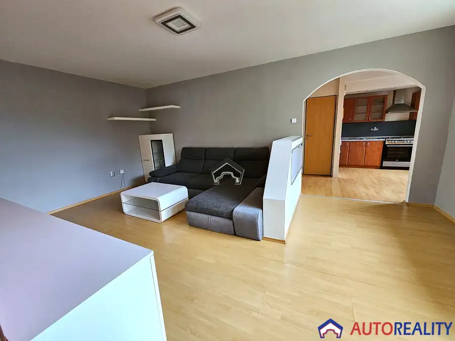
BytNové 185 000 €3-izbový byt s loggiou a garážou 20 m² - Banská Bystrica Banská Bystrica 66 m²1. podlažie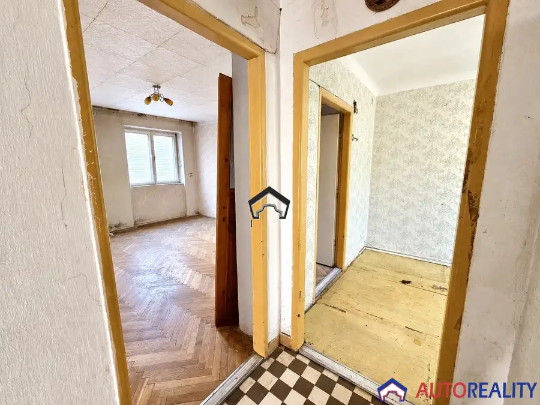
BytNové 158 000 €3-izbový byt vo Zvolene – Sekier s vlastným pozemkom 100 m² a parkovaním pre 2 autá Zvolen 3-izbový81 m²1. podlažie